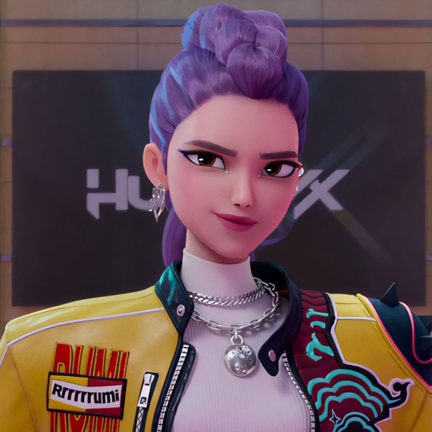

Rumi is one of the members of Huntrix, a group of demon hunters whose voices possess the power to drive away demons and protect the Honmoon. Although she appears to be an ordinary hunter, Rumi carries a secret that shapes her entire life: she was born half demon.
After the death of her mother, Rumi was raised and trained by Celine, who taught her to hide her demonic heritage from the world. For years, Rumi devoted herself to becoming the perfect hunter, believing that creating the Golden Honmoon would free her from the demon within and allow her to live as a normal person.
As Gwi-Ma's influence grows stronger, Rumi begins to lose control of her powers, and demonic markings start spreading across her body and affecting her hunter's voice. At the same time, the appearance of the mysterious boy group Saja Boys introduces new challenges and unexpected connections into her life.
Through her growing friendship with Jinu, Rumi discovers someone who understands her struggles and accepts both sides of her identity. Their bond helps her realize that her demon heritage is not a curse to be erased, but a part of who she is. By embracing her true self and fighting alongside her friends Zoey and Mira, Rumi ultimately helps defeat Gwi-Ma and create the Golden Honmoon.